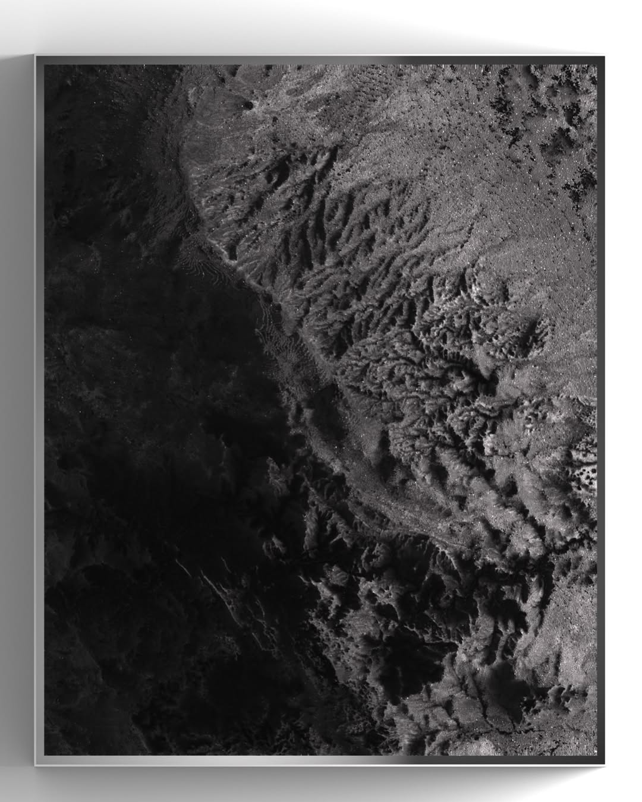
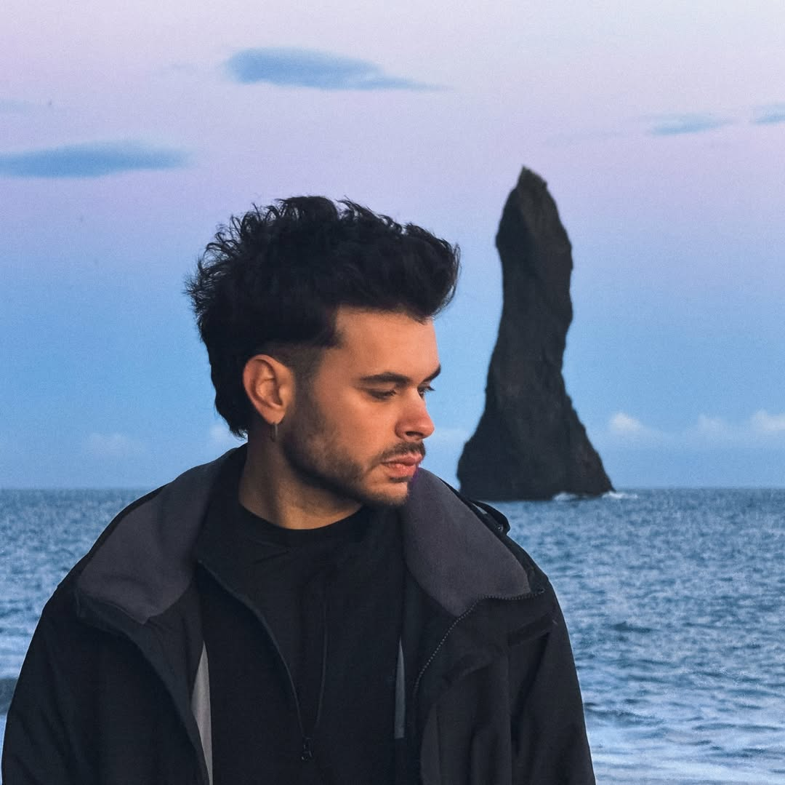

Miroko
Media Art
sideFX Houdini
2025
이 작품은 소말리아 지역의 실측 고도 데이터를 바탕으로 생성된 지형 실험이다.
작가는 디지털 솔버 내부에서 지형 스스로의 정보에 의해 왜곡되는 절차적 과정을 구현함으로써,
알고리즘이 기억하고 해석한 풍경을 시각화한다.
변형된 텍스처와 진화하는 지형 표면은 자연의 흔적과 알고리즘의 간섭이 맞물려 형성된
'기억된 지형' 혹은 '왜곡된 현실'을 제시하며,
인간이 인식할 수 있는 경계 너머의 풍경을 상상하게 만든다.
이 미디어 아트 영상은 실제 소말리아 지역의 고도 데이터를 바탕으로 생성된 디지털 지형이,
절차적 알고리즘을 통해 지속적으로 왜곡되고 재구성되는 과정을 시각적으로 기록한 것이다.
작가는 고도 정보가 담긴 하이트필드를 기반으로,
해당 데이터 자체가 움직임(Advection)을 유도하는 방식으로 솔버 내부에서 연산을 진행시킨다.
이로 인해 단순한 자연 지형은 점차 이질적이고 기하학적인 형태로 변모하며, 원래의 지형성과 전혀 다른 풍경으로 진화한다.
영상은 정지된 이미지가 아닌, 지형의 기억이 시간에 따라 어떻게 재구성되는가를 보여주는 시간 기반 실험이다.
검은색과 회색조의 화면 속에서 섬세한 움직임이 반복되고, 고요한 듯 미세하게 진동하는 표면은 마치 지구의 내면이 꿈틀거리는 것처럼 보인다.
이는 자연의 데이터가 디지털 알고리즘이라는 해석기를 통과할 때, 얼마나 낯선 ‘풍경의 언어’로 탈바꿈하는지를 탐구하는 작업이다.
